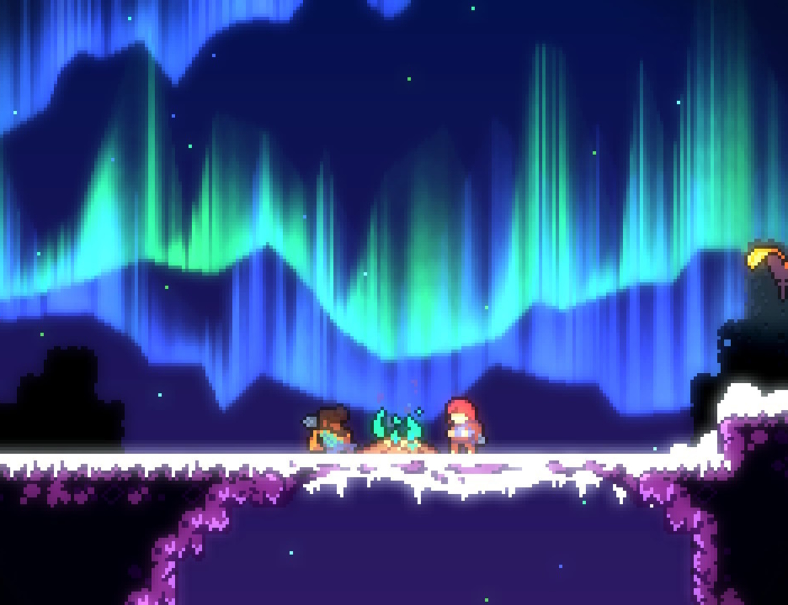
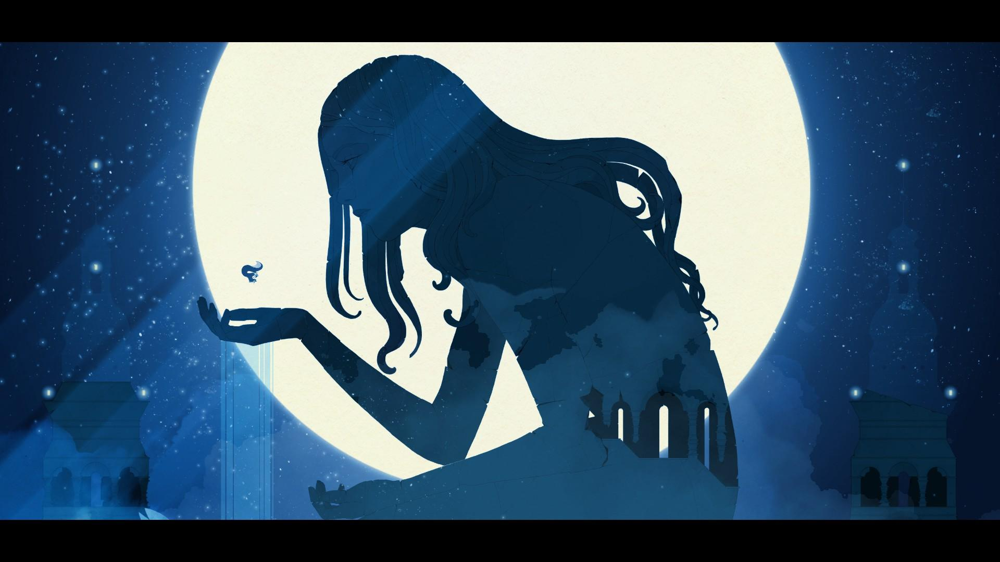

platformers
Dit genre spreekt voor zich. dit zijn games die best wel met movement te maken hebben. Mario is bijvoorbeeld een heel populair voorbeeld van een platformer game. de moeilijkheid hoeft niet persee aanwezig te zijn. Ik list hier games die ik gewoon leuk vond hoe moeilijk ze ook zijn.
Celeste
Celeste is een lastige platformer die in een pixel 2d stijl is gemaakt. De game forceert je om speed run truckjes te leren in het laatste level, wat ik eigenlijk nog nooit in een ander spel heb meegemaakt. Ik heb op steam bijna alle archievements van dit spel, waar ik best wel trots op ben opzich want het is echt een lastig spel. er zijn veel levels van dit spel die best wel bekend zijn op het internet, vaak vanwege de moeilijkheid. De story is ook prima. het gaat over een meisje die tegen haarzelf vecht terwijl ze een grote berg probeert te beklimmen.
Gris
Gris is echt een experience die ik iedereen aanraad. het spel duurt niet lang, maar 3-5 uur. Het plot is niet iets wat iedereen op dezelfde manier interpeteert. het word best wel vaag laten zien, en jij moet daar maar iets van maken. Met echt prachite scenery op de achtergrond is elke seconde in dit spel wel een screenshot waardig moment.
de gameplay is niet de focus in dit spel, maar het bestaat wel. De gameplay bestaat vooral uit een beetje parcour en puzzels. Sommige puzzels vond ik persoonlijk nog best wel lastig maar over het algemeen zijn ze allemaal te doen. De soundtrack is extreem goed, het voelt soms bijna als een film.
Super Mario 3D world
Ik speelde dit op mn wii u vroeger, en dit is by far mn favoriete mario game. Het spel voelde echt extreem groot. elke keer als je dacht dat je klaar was met het spel kwam er opeens een wereld bij. Ik probeerde alle sterren te verzamelen voor een allterlaatste wereld, maar dat is me nog niet gelukt.
er is een best wel grote selectie van characters, elk character heeft een eigen sterkte. Dat maakt het kiezen van een character in sommige levels nog best wel tactisch wat ik leuk vind. De nieuwe power-ups die in deze game werden geintroduceerd vond ik ook leuk. De soundtrack blijft ook iconisch in mijn hoofd.